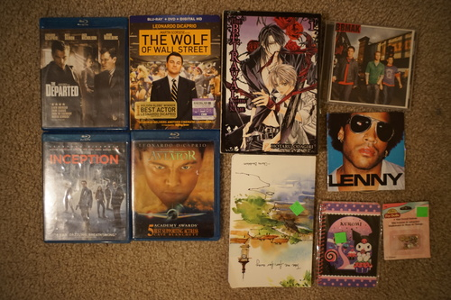
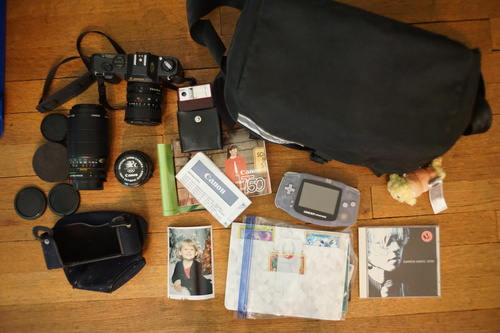
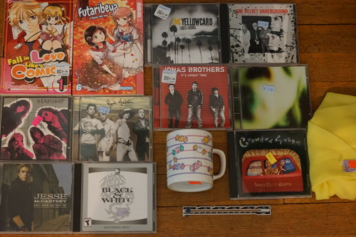

Gee, it sure gets overwhelming to put off your blog post and end up having to write a massive one!!! I have so many stupid Cheby photos to sort though...
I'm sure anyone who cares already knows, but I wiped Cheby and redid his faceup myself. Here you go! Here's his new face. Not really so different from the last one.

I spent days trying to get my lines thin enough, the eyelashes at the right angle, and the eyebrows placed okay. Turns out his eyebrows are the most important part of him and should not be changed too much!
I did a faceup before the one shown and it was just so NOT Cheby. He looked all wrong!! I was very upset and wiped it before finishing it.
I did entirely too much shopping. I'm very embarrassed! My CD collection is reaching critical mass. Please everyone come over and rip them! I got boy bands, I got sad boys, I got angry boys! I got it all!!
I'm gonna need volume 2.
There's a drawing of a Lamy Safari inside. The quote on the cover is "Take me far, far away" -Charles Baudelaire. Ryan says he did not say that.
I didn't expect to know any of this but I got very excited when I recognized the first song.
I went home to see my mom for a couple weeks. We did a lot of shopping, canning, youtube doomscrolling.
I finally got to go to some yard sales this year with my mom. I totally scored. I'm really happy!!
I spent days removing a battery from this jerk.
Has a really cool lens cap from the 1984 olympics!!
I haven't had a chance to listen to the lyrics, but I fear they may end up being degenerate like Affirmation ._.
The camera bag was marked $20, but they took $15 for it. It came with a body case for the T50 which appears to have mold? My mom said she'd work on scrubbing the mold off the plastic but I'm not against tossing it. I at least got it in a baggie.
My camera is a whopping 10.5 inches long with the 75-200mm lens fully extended. This is ridiculous!! Even not extended, it attracts too much attention and people start asking me questions! Stop!!! Let me shoot pictures of rocks in peace! I'm not famous!! I can't even figure out how to focus this thing!
I said I would email some photos of the thing she wanted to her but I got battery acid on her business card and threw it away.
Another cool find was this GBA. The price was $10, but I tried to talk her down to $5 because someone had ripped off the start and select buttons and the battery cover clip was broken off. She was very reluctant to drop the price because it was worth $100 on eBay! Wow!! She eventually offered 8 and I got her to 7. I tested it when I got home and it does turn on. I'm giving it to Ryan for his modding escapades.
I asked how much the pokemon cards were and she said free so thank you to her for not looking it up and trying to get 5 buckaroos out of me.
Very basic shojo. I'm half way through and too suspicious of the love interest. Am I too old?!
Bought solely for the fact it was a quarter and the girls were cute. Looks like it is a yuri 4koma though.
Who named this album?? I'm not sure this was what I was expecting to hear.
It appears I have already lost this CD before ripping it. Where did it go...
I actually don't know much more of their music than the Jonas theme song. Kana keeps linking them in her music recs and I keep enjoying them though.
I feel like a Smashing Pumpkins megafan for the reasonable price of $5 total. I'm not sure how big of a fan I am but I like the albums enough to keep listening.
>mfw gnudb has his name spelled wrong and I didn't bother to look before ripping it
The cashier was got really nostalgic when I brought it to her and she told me not to get teen pregnant.
I really wanted to play this a few years ago but it was like $14!!!! I hope wine can handle it.
hors is a Sanrio pro and can identify any print for me.
I needed this for a cosplay years ago. Do you think I'll finish it now?
(not pictured) It looked unread and I really didn't need to buy a second copy.
Designed by Tommy Hilfiger
For my mom. She said she's watched her DVD 50 times so I think she deserves and upgrade.
sewing tools $.50
The best part of this movie was Harrison Ford.
Also comes with a wiimote screen protector? What in the heck
I'm still not sure this isn't christian music but I'll give it a chance just because they're emo.
(not pictured??) yesssss i found it!!! I had many of these songs in my Sims 2 files so I could listen to them instead of the bgm
My mom's. I swear I've posted her buying an ice bag before. Maybe I should investigate the size of her collection next time.
If I can't get the stains out, it will become doll fabric.
for doll purposes
Did I miss anything? Everything??? This was way too much to write!!!
I recently learned that huckleberries are not extra large black berries, but extra small blueberries. Maybe if you pack them tight enough they'll look like an extra large blackberry.